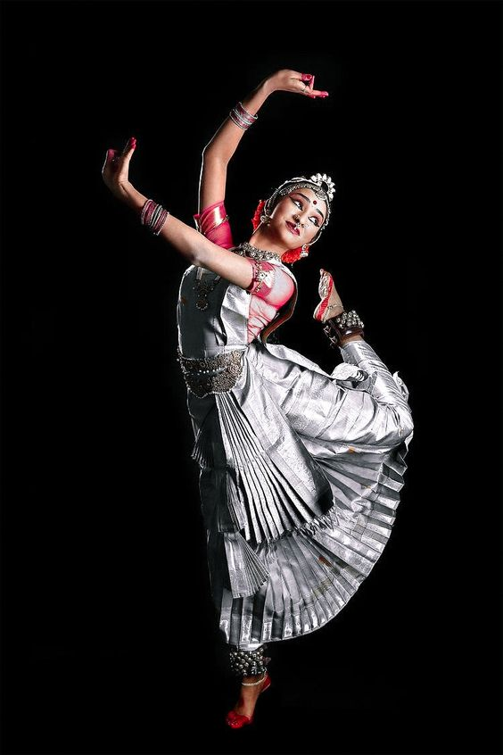

Kuchipudi
<

The theoretical foundation of Kuchipudi is rooted back to the ancient Sanskrit Hindu text on the performing arts called ‘Natya Shastra’ which is accredited to Indian theatrologist and musicologist Bharata Muni. It is assumed that the full version of the text was first completed between 200 BCE to 200 CE, but such period also varies between 500 BCE and 500 CE. It incorporates verses in thousands that are structured in different chapters and divides dance in two distinct types that are ‘nrita’ that is pure technical dance and ‘nritya’ that is solo expressive dance. ‘Natya Shastra’, states Russian scholar Natalia Lidova, explicates various Indian classical dance theories including that of standing postures, bhava, rasa, basic steps, methods of acting, gestures and Tandava dance, which is associated with Lord Shiva. Bharata Muni not only mentions the Andhra region in this ancient text but also attributes an elegant movement called ‘Kaishiki vritti’ and a raga called ‘Andhri’ to this region. The raga that is associated with ‘Arsabhi’ and ‘Gandhari’ also finds place in several other Sanskrit texts dating back to the 1st millennium.
The 10th century copper inscriptions validate the existence of Shaivism associated dance drama performance acts called ‘Brahmana Melas’ or ‘Brahma Melas’ in regions of South India with Telugu speaking populace. Brahmins performed this art during the medieval era. Vaishnavism that traditionally include Bhakti music and dance dedicated to Lord Krishna and evolved during the 2nd millennium presumably embraced this art form. It developed in South India’s Tamil region as ‘Bhagavata Mela Nataka’ and in Andhra region as Kuchipudi. Saskia Kersenboom mentions that both ‘Bhagavata Mela Nataka’ and Kuchipudi are closely related to the traditional theatre form of Karnataka called ‘Yakshagana’ and also incorporate Carnatic music like the latter, however the three retain their uniqueness palpable from their varied costume, format, innovative ideas and perceptions. Again author Manohar Laxman Varadpande states that this form came up in the late 13th century during the reign of the Eastern Ganga dynasty of Kalinga, who patronized art forms based on works of famed Sanskrit poet Jayadeva, most notably the ‘Gita Govinda’. Such auspices of the monarch saw several dance-drama troupes and bards incorporating concepts based on Radha and Krishna in traditional Kuchipudi, which were locally called ‘Vaishnava Bhagavatulus’.
Tirtha Narayanayati, a composer of Carnatic music and a sanyasin of Advaita Vedanta (the oldest extant sub-school of Vedanta) and his orphan disciple Sidhyendra Yogi, a Telugu Brahmin, are accredited for initiating, methodizing and arranging the present day version of Kuchipudi in the 17th century. Narayanayati penned down a tarangini or a Sanskrit opera called ‘Sri Krishna Leela Tarangini’. The composition deals with the life of Lord Krishna from His childhood till His marriage to Rukmini and encompasses 12 Tarangams and includes 302 slokams, 153 songs and 31 choornikaas. Written as a libretto, this work apt for a dance drama has been performed by umpteen Indian classical dancers over the last two centuries. Sidhyendra Yogi followed his guru’s footsteps and wrote the play ‘Parijatapaharana’ also famous as ‘Bhama Kalapam’. Facing initial hardships in getting appropriate performers for his play he finally zeroed in on a group of young Brahmin boys belonging to wife’s family village Kuchelapuram and was also granted permission by villagers to execute the play once annually. It is from this village, which is also known as Kuchilapuri, that the dance form derived its name as Kuchipudi. American born dancer Ragini Devi mentioned that the name of the village was deduced from the Sanskrit word ‘Kusilava-puram’ meaning of which is "the village of actors"